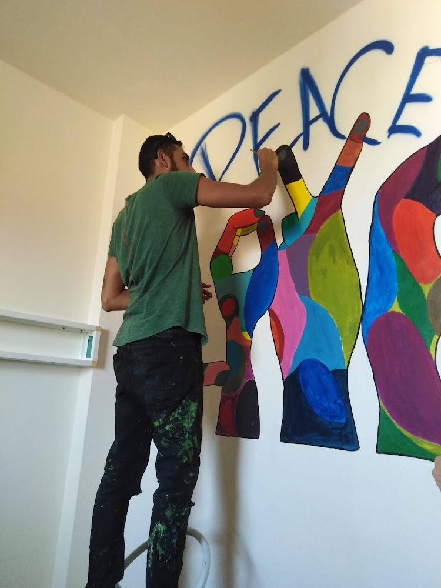
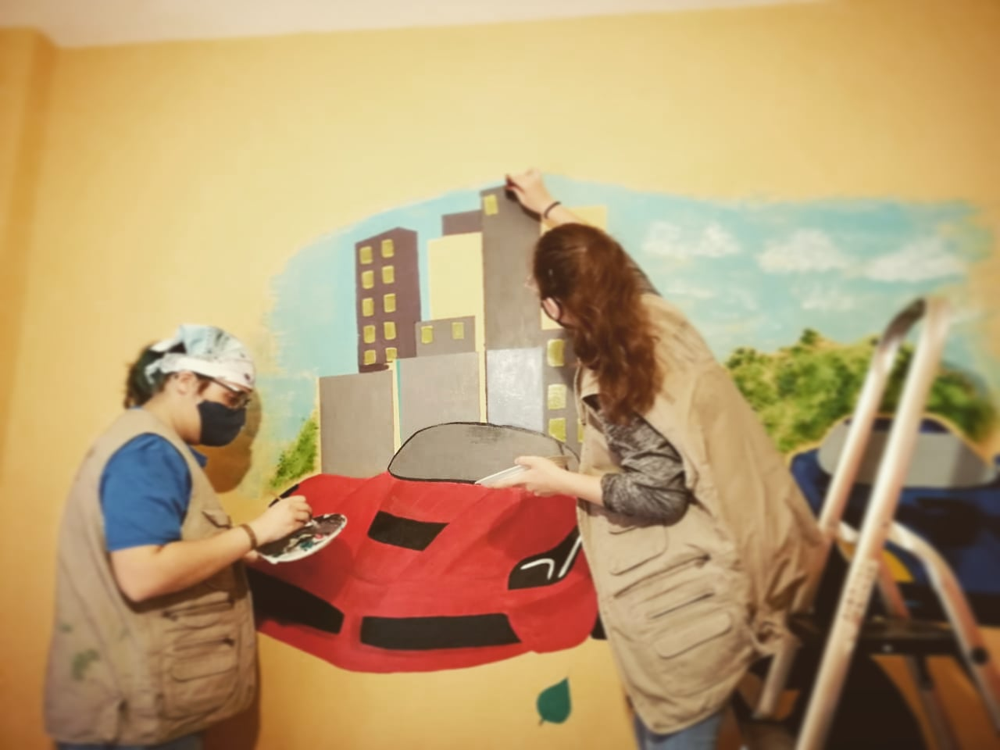

Beirut
Projects rooted near our base and surrounding communities.

Projects and places
Projects rooted near our base and surrounding communities.
Wall painting and community art reaching northern areas.
Color and public art carried into southern communities.
Project gallery




Work map